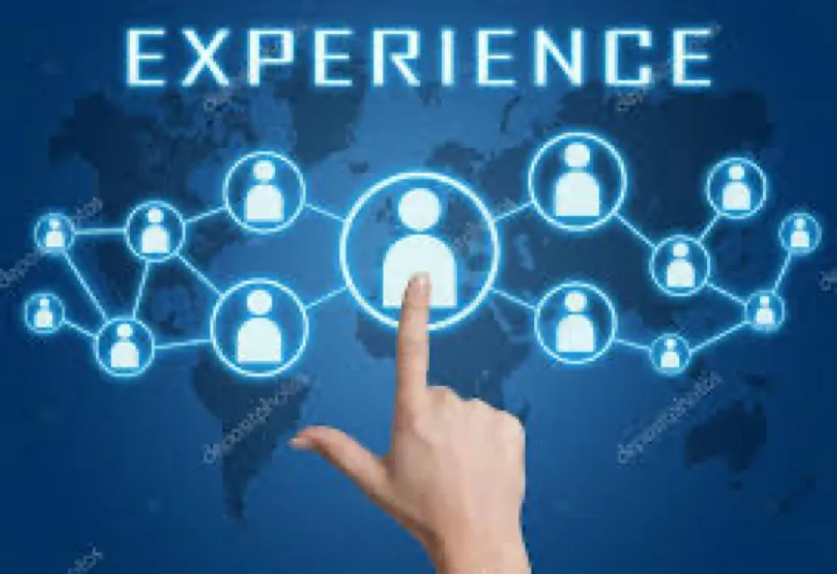

Experience Economy

Experience Economy
Experience of using a product or service is increasingly becoming a key differentiator for businesses across most sectors.
In the world where disruption is a norm, barriers to entry are difficult to achieve and commoditization is rampant, businesses are trying to hold on to customers by providing a delightful experience.
Only 52 companies from the first Fortune 500 list published in 1955 still figure in the 2021 list. While most of the new entrants are innovative disrupters, those who have maintained their place have consolidated their position by establishing a memorable brand and providing a great experience, besides developing innovative products and services.
Let us breakdown the various types of experiences.
Customer Experience (CX)
Customer Experience is a broad experience across sales, marketing and support.
Before the advent of the internet, engagement with customers was only face to face and over the telephone. Companies took pains to design engagement plans with the right mix of human resources to optimise engagement. There was a lot of innovation in telephone-based engagement including technologies like interactive voice response, speech recognition and analytics which improved customer experience.
The internet and development of the World Wide Web created a huge shift in the way customers started engaging with businesses. It started with public websites providing predominantly text and image-based information to customers, followed by exchanging relevant information instantly through electronic mail. This was a time when businesses with fewer resources but a good product or service were able to use the internet to inform and communicate with prospects relatively inexpensively, resulting in increased competition and higher expectations on incumbents.
The advent of the mobile phone provided a tool to deliver experience anywhere using voice and subsequently short message services. Fast forward a decade, social networks came on the scene and provided customers additional tools to engage with businesses and communities around the world about their experiences with products and services.
Today the customer has a plethora of ways to instantly engage with businesses across multiple channels long before they even make a purchase, and throughout the lifecycle of the relationship. At every stage of this engagement there is a very high expectation on their experience.
Experience today is one of the key factors for customer intention to buy, loyalty and willingness to recommend the product or service they use.
User Experience (UX)
User Experience has become more critical than ever with the rapid digitisation of products and services.
In the past, user experience was an afterthought when designing a product or service. It was designed by a group of people in a room who would work out how customers would use their product or service with very little input from actual users.
Today UX can make or break a product. A lot of work is done with actual users using Human Centred Design. Customer journeys are iterated to make the experience seamless for different customer personas across the lifecycle of the customer relationship. Key factors to improve experience — e.g. speed, ease, and accuracy in the buying and support journeys — are explored. A living and breathing feedback loop is put in place to measure and improve user experience.
Employee Experience (EX)
The industrial revolution led to a major focus on efficiency since it had a huge impact on output. Humans were an essential part of this system and to ensure predictable human output, a hierarchical management structure evolved whereby roles and responsibilities were rigid. Employee experience was not a big focus area in this era.
We have come a long way since, and ways of working have evolved. While we still have a substantial industrial workforce which is more hybrid given automation technologies, the explosion of knowledge work has driven flatter management structures and in some cases a relatively self-organised setting. Traditional people functions in businesses are now tasked with looking after the experience of employees in the same way we do for customers.
This has resulted in huge progress in the tools and processes used for hiring, engagement, experience and lifetime management of employees.
Today digital tools are used for onboarding, feedback, engagement, performance, rewarding and even offboarding across the lifecycle of an employee's time with the business.
Some of the key factors critical to achieving delightful experiences are outlined below.
Omni-Channel Engagement
With the proliferation of channels of engagement, paradoxically the experience doesn't necessarily get better. Invariably there is a loss of communication between channels which more often than not causes the experience to suffer.
Omni-channel engagement streamlined with the relevant user, customer or employee journey becomes critical. While on the face of it this seems an easy task, the operating model of most businesses is very disjointed, making it hard to achieve.
Intelligent Workflows
Processes are core to any business transaction and companies have established processes to make the optimum use of resources to make transactions efficient and seamless.
Analogous to customer journeys, there are internal business workflows which are a combination of processes that result in a transaction completed in the most effective way. With AI, RPA and other automation technologies, these workflows can be made more efficient with the right mix of humans and machines to complete the transaction.
Intelligent Workflows are helping traditional businesses to be more competitive in today's disruptive world.
Advanced Analytics
Businesses generate a huge amount of data for every interaction within the business and with customers. This data is structured and unstructured but has traditionally only been used for financial reporting and planning activities in a historical context.
With easy availability of enormous computing power and the latest analytics technologies, this data is now used to provide advanced analytics to businesses. Businesses can also combine this data with other external data to provide predictive insights on business performance, competitive threats and opportunities, and ways to enhance the product and services experience — all in real time.
The economic impact of delivering a delightful experience in all contexts in today's hyper-personalised world is enormous.
We have long understood the value of experience as the Progression of Economic Value, with companies like Disney, IBM and GE showing the way by the end of the 20th century. Fast forward to today's pandemic-driven economy, businesses are re-imagining themselves through the lens of experiences delivered.
KPMG in a report found that striking the right balance between customer experience, customer expectation and value is critical and core to the principle of CX Economics.
UX investments have been proven to increase usage — a proxy for sales — and drive cost savings through reduced developer time spent fixing hastily released products.
The pandemic has reset the employee and employer relationship in a fundamental way. While new ways of working have become the talk of the day, there is a deeper change driven by redefining the key organisational imperatives of purpose, values and culture, which drive changes in how companies operate and grow. EX is the key to understanding and redefining this relationship.
An IBM report found that organisations that score in the top 25% on EX double their return on sales and achieve three times the return on assets compared to organisations in the bottom quartile.
We are at an inflection point in the global economy, with the pandemic having a huge impact on the way we work, do business and develop products and services. All aspects of the Experience Economy have never been as important and will have a major role to play in the future.